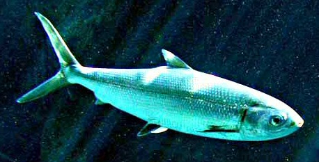

Dagupan is widely associated with bangus, or milkfish, one of Pangasinan's most loved food icons. A food trip here can include grilled bangus, fried bangus, stuffed bangus, and other local seafood dishes served in restaurants, markets, and family dining spots.
Known as the “Bangus Capital of the Philippines,” Dagupan takes pride in producing flavorful and high-quality milkfish raised in nearby fishponds and coastal waters. The city’s rich fishing industry has shaped its food culture for generations, making bangus not only a delicacy but also an important symbol of local identity and livelihood.

Visitors can enjoy a wide range of bangus dishes prepared in different styles. Popular favorites include inihaw na bangus (grilled milkfish), crispy fried bangus, rellenong bangus (stuffed milkfish), bangus sisig, and sinigang na bangus. Many restaurants also serve freshly cooked seafood such as shrimp, squid, oysters, and crabs, creating a complete culinary experience for tourists and food lovers.
Aside from restaurants, travelers can explore local markets and roadside eateries where freshly harvested seafood is sold daily. Dining in Dagupan often comes with warm Pangasinense hospitality, allowing visitors to experience both authentic flavors and the welcoming culture of the city.
For the best experience, pair the food trip with nearby heritage stops and ask locals for recommended eateries. During Bangus Festival season, the city becomes even livelier with food-centered events and cultural activities.
The annual Bangus Festival celebrates Dagupan’s thriving milkfish industry through street grilling events, cooking competitions, cultural performances, concerts, and food fairs. One of the festival’s highlights is the massive outdoor grilling activity where hundreds of bangus are cooked simultaneously, attracting visitors from different parts of the country.
Whether visiting during the festival season or on a regular day, a Dagupan Bangus Food Trip offers travelers a memorable taste of Pangasinan’s culinary heritage, combining delicious seafood, local traditions, and vibrant city life into one flavorful experience.